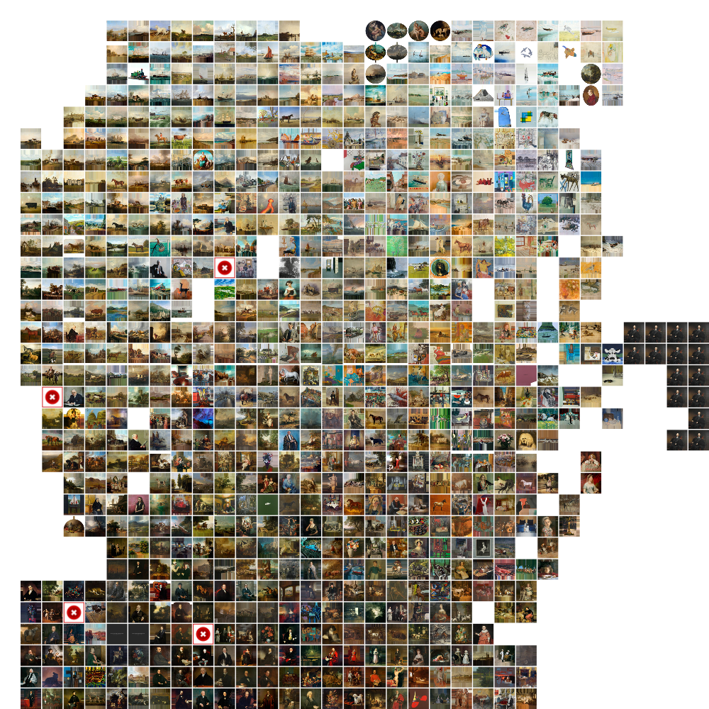

SiGrid: Gridifying Scatterplots with Sector-Based Regularization and Hagrid

(opens in new tab)
Venue. IEEE VIS (2025)
Materials.
DOI(opens in new tab)
PDF(opens in new tab)
Abstract. Hagrid is a state-of-the-art space-filling-curve-based method for gridifying scatterplots. However, it exhibits limitations in preserving the global structures of scatterplots with areas of varying density due to the incompatibility of adapting the granularity level of the underlying space-filling curve to regions with different densities. To compensate for this shortcoming, we introduce SiGrid, which combines Hagrid with the Sector-Based Regularization (SBR) technique. SiGrid applies SBR to generate a scatterplot with a more uniform and generally lower density as an intermediate step. This intermediate scatterplot can then be fed to Hagrid for improved results. We quantitatively evaluate SiGrid by comparing it to Hagrid over a set of 502 scatterplots of different sizes, ranging from 50 to 10000 points per dataset, using relevant quality metrics. While generally slower, the results demonstrate that SiGrid outperforms Hagrid regarding the quality metrics of rank-wise neighborhood preservation (trustworthiness), ordering preservation, and pairwise distance preservation (cross-correlation).
Link to this page: